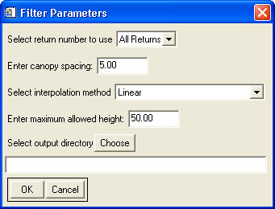

Using "Perform Height Filtering"
This tool is meant to filter LiDAR data into ground and vegetation classes, and to calculate the heights of the vegetation points above the ground.

Usage:
- Select the input file(s) to filter. If multiple files are selected, they are processed sequentially.
- Select whether to use the first return, last return, or both.
- Input an estimated canopy spacing. This parameter reflects how "open" the canopy is, and is in the units of the horizontal coordinates of the data. Generally, 4-5 m seems to work fairly well. (Note: this is not the same as the LiDAR point spacing.)
- Select the interpolation method to be used. The method chosen may have a significant effect on processing speed, with "Linear" being the fastest. ("Natural Neighbor" has also been found to work quite well.)
- Select the maximum allowed height, in units of the elevation data. Any computed height values greater than this will be assumed in error.
- Select the output directory. The output files will be saved in the new directory with the same name as the input files.
Back to LidarTools home page.
Notes:
- This tool requires data that are in the LAS format.
- This tool was developed to filter rangeland vegetation (sagebrush, etc.) which has a fairly open canopy. It seems to work fairly well in some forestry applications, but has not been evaluated for dense canopies (i.e. rainforests). Ultimately, the effectiveness probably relies on the LiDAR point spacing more than anything else.
- This tool is not intended to filter buildings or other large structures.
- The tool may not do very well calculating height values near the edges of the data files. This is due to processing files individually and the resulting lack of points near the edges.
- For more information on the filtering algorithm, see:
- Streutker, D. and Glenn, N., 2006. LiDAR measurement of sagebrush steppe vegetation heights. Remote Sensing of Environment, 102, 135-145. (Link)
Comments?
• Idaho State University • Boise Center Aerospace Laboratory • 322 E. Front Street #240 • Boise, Idaho • 83702 •